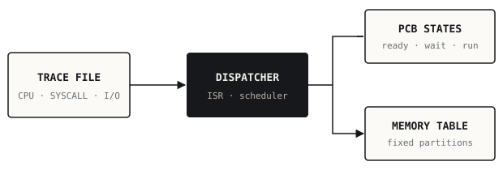

01 / C++ / systems programming
Operating-System & Interrupt Simulator
Completed coursework
Simulating interrupts, process states, and memory management from input traces.
What the project demonstrates
- Worked on a trace-driven operating-system simulator that processes CPU work, system-call events and I/O interrupts.
- Implemented FORK/EXEC process behavior, process-control-block updates, and fixed-partition memory allocation.
- Wrote documentation and tested scenarios covering nested processes, execution traces and I/O handling.

SYSC 4001 coursework; some early simulator work was shared with a teammate, and later files contain individual submissions.